東京大学 2003年 理科 第2問
問題
Oを原点とする複素数平面上で6を表す点をA、7+7Iを表す点をBとする。ただし、Iは虚数単位である。正の実数tに対し、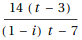を表す点Pをとる。
(1) 角APBを求めよ。
(2) 線分OPの長さが最大になるtを求めよ。
解答
(1)
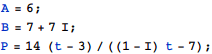
余弦定理を使って角APBの余弦を求める。
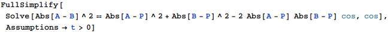
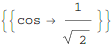
角APBは0≤角APB≤πの範囲にあるからそのままArcCosを使って求めることができ、
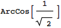
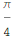
(2)
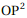のグラフは下図。
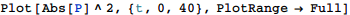
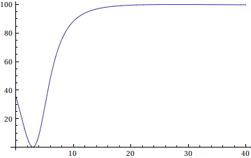
Maximizeは虚数を含む場合に使えないので、を予め計算し、
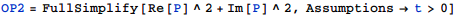
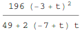
これにMaximizeを用いると、
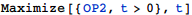
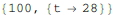
従ってt=28のときOPは最大。
補足・感想
Maximizeは引数内に虚数単位が入っていると使えないので、予め入らない形に整理しておく必要あり。